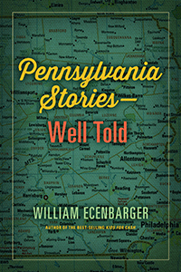

<body bgcolor="#FFFFFF" text="#000000" link="#0000FF" vlink="#CC0000" alink="#CC0000"><center><hr width="350" size="1" align="center" noshade>An engrossing compendium of stories on the people, places, and events that make Pennsylvania unique. Well told.<hr width="350" size="1" align="center" noshade><p><a href="https://cdcshoppingcart.uchicago.edu/Cart/ChicagoBook.aspx?ISBN=&&PRESS=temple" target="_top">Buy this book!</a> | <a href="https://cdcshoppingcart.uchicago.edu/Cart/Cart.aspx?PRESS=temple" target="_top">View Cart</a> | <a href="https://cdcshoppingcart.uchicago.edu/Cart/Cart.aspx?PRESS=temple" target="_top">Check Out</a></p><p></p></center><!--none//--><h1 class = "booktitle">Pennsylvania Stories-Well Told</h1>
<h3>William Ecenbarger</h3>
<p class="info">cloth: $25.00, May 17<BR>EAN:&nbsp;978-1-4399-1465-6<BR><font color=#990033>Not Yet Published Preorder</FONT><font size=-7><br>&nbsp;</font></p><p class="info">e-book: $25.00, <BR>EAN:&nbsp;978-1-4399-1467-0<BR><font color=#990033>Not Yet Published Preorder</FONT><font size=-7><br>&nbsp;</font></p></p></td></tr></table>
<BR> <p class="info">244 pp<BR> 5.5 x 8.25<BR> <p class="info"><font size=-7>&nbsp;</font></p><p class="info">
</P><BLOCKQUOTE></BLOCKQUOTE>
<p>
With a biting mix of wonder and pride, William Ecenbarger observes that in the quirky state of Pennsylvania, the town of Mauch Chunk changed its name to Jim Thorpe-even though the famous Indian athlete never set foot in it.<br>
<p>A former journalist for the<i> Philadelphia Inquirer Magazine, </i>and author of the bestseller <i>Kids for Cash, </i>Ecenbarger has collected a dozen of his fascinating articles showcasing the Keystone State in <i>Pennsylvania Stories</i>-<i>Well Told. </i>He provides a history of the pencil, and considers why the first day of Pennsylvania's deer hunting season-the world's largest participatory sporting event-is an unofficial state holiday, closing schools and state offices. Ecenbarger also profiles George "Boom Boom" Zambelli, the internationally renowned pyrotechnic king, and goes driving with Pennsylvania native John Updike in rural Berks County, PA. <br>
<p>Other fascinating tales unfold in <i>Pennsylvania Stories, </i>from an inspiring tale of Governor Bob Casey's double organ transplant, to darker essays on the electric chair and the Ku Klux Klan, to a mile-by-mile appreciation of the Pennsylvania Turnpike. <br>
<p>In these weird and wonderful stories, Ecenbarger highlights just what makes Pennsylvania both eccentric and great. His book is a delightfully intriguing read for natives and curious outsiders alike.
<br>
<P CLASS="top"><A HREF="#top">BACK TO TOP</A></P>&nbsp;
<BR>&nbsp;
&nbsp;<P>
</P><BR>&nbsp;
<H2 class="inpageheading"><A NAME="author bio"></a>About the Author(s)</H2><p>
<b>William Ecenbarger</b>, a freelance writer, is the author of <i>Walkin' the Line, Glory by the Wayside: The Old Churches of Hawaii</i>, and <i>Kids for Cash: Two Judges, Thousands of Children, and a $2.6 Million Kickback Scheme</i>, and the co-author of <i>Catching Lightning in a Bottle: How Merrill Lynch Revolutionized the Financial World</i> (with Winthrop H. Smith) and <i>Making Ideas Matte</i>r<i>: My Life as a Policy Entrepreneur</i> (with Dwight Evans).
<br>
<P CLASS="top"><A HREF="#top">BACK TO TOP</A></P>
<p><h2 class="inpageheading"><A NAME="subjects"></a>Subject Categories</h2><P><A HREF="/tempress/general.html" TARGET="_top">General Interest</a>
</p>
<P>
</P>
<p align="center"><a href="https://cdcshoppingcart.uchicago.edu/Cart/ChicagoBook.aspx?ISBN=&&PRESS=temple" target="_top">Buy this book!</a> | <a href="https://cdcshoppingcart.uchicago.edu/Cart/Cart.aspx?PRESS=temple" target="_top">View Cart</a> | <a href="https://cdcshoppingcart.uchicago.edu/Cart/Cart.aspx?PRESS=temple" target="_top">Check Out</a></p><p><font face="Arial" size="1"><a href="copyright.html" onMouseOver="window.status='Web Copyright Policy';return true;" onMouseOut="window.status=''" title="Web Copyright Policy">&copy;</a> 2017 <a href="http://www.temple.edu" target="new" onMouseOver="window.status='Link to Temple University home page';return true;" onMouseOut="window.status=''" title="Link to Temple University home page">Temple University</a>. All Rights Reserved. http://www.temple.edu/tempress/titles/2445_reg.html</font></p>